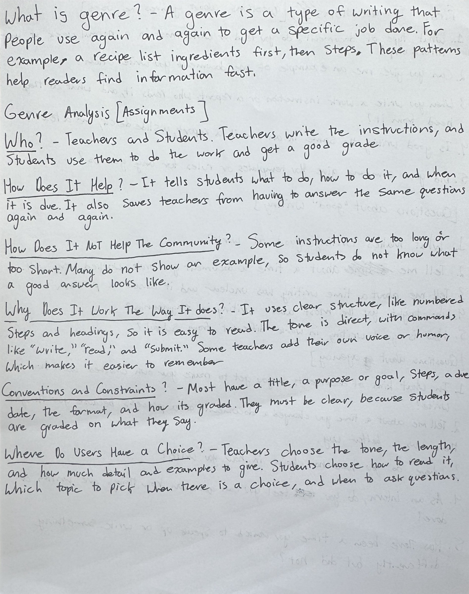
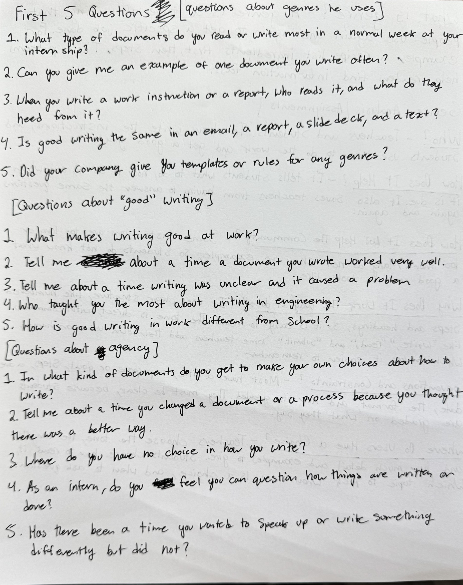

MP2 Planning Work
My handwritten genre analysis of class assignments, and the 15 questions I wrote for my interview.
This work connects to Decision Making & Production because it treated genre as a set of choices. First, I researched what a genre is. Then I analyzed a genre I use every day: school assignments. This showed me which parts of a genre are fixed and where the writer still gets to choose. Last, I wrote interview questions for my brother, who is an intern at Lockheed Martin. I picked questions that would get real examples and stories from his work that I can use in MP2.
I used my laptop to access Webcourses. On Webcourses, I read the assignment instructions and the readings about genre. I wrote my genre definition, my genre analysis, and my 15 interview questions by hand with pen and paper, as the assignment required.

What is genre? A genre is a type of writing that people use again and again to get a specific job done. For example, a recipe lists ingredients first, then steps. These patterns help readers find information fast.
Genre Analysis [Assignments]
Who? Teachers and students. Teachers write the instructions, and students use them to do the work and get a good grade.
How does it help? It tells students what to do, how to do it, and when it is due. It also saves teachers from having to answer the same questions again and again.
How does it not help the community? Some instructions are too long or too short. Many do not show an example, so students do not know what a good answer looks like.
Why does it work the way it does? It uses clear structure, like numbered steps and headings, so it is easy to read. The tone is direct, with commands like “write,” “read,” and “submit.” Some teachers add their own voice or humor, which makes it easier to remember.
Conventions and constraints? Most have a title, a purpose or goal, steps, a due date, the format, and how it is graded. They must be clear, because students are graded on what they say.
Where do users have a choice? Teachers choose the tone, the length, and how much detail and examples to give. Students choose how to read it, which topic to pick when there is a choice, and when to ask questions.

1. What type of documents do you read or write most in a normal week at your internship?
2. Can you give me an example of one document you write often?
3. When you write a work instruction or a report, who reads it, and what do they need from it?
4. Is good writing the same in an email, a report, a slide deck, and a text?
5. Did your company give you templates or rules for any genres?
1. What makes writing good at work?
2. Tell me about a time a document you wrote worked very well.
3. Tell me about a time writing was unclear and it caused a problem.
4. Who taught you the most about writing in engineering?
5. How is good writing in work different from school?
1. In what kind of documents do you get to make your own choices about how to write?
2. Tell me about a time you changed a document or a process because you thought there was a better way.
3. Where do you have no choice in how you write?
4. As an intern, do you feel you can question how things are written or done?
5. Has there been a time you wanted to speak up or write something differently but did not?